Preference finetuning methods like Direct Preference Optimization (DPO) with AI-generated feedback have shown promise in aligning Large Vision-Language Models (LVLMs) with human preferences. However, existing techniques overlook the prevalence of noise in synthetic preference annotations in the form of stylistic and length biases. To this end, we introduce a hard-negative response generation framework based on LLM-guided response editing, that produces rejected responses with targeted errors, maintaining stylistic and length similarity to the chosen ones. Using this framework, we develop the VaPR dataset, comprising 30K high-quality samples, to finetune three LVLM families: LLaVA-V1.5, Qwen2VL & Qwen2.5VL (2B-13B sizes). Our VaPR models deliver significant performance improvements across ten benchmarks, achieving average gains of 6.5% (LLaVA), 4.0% (Qwen2VL), and 1.5% (Qwen2.5VL), with notable improvements on reasoning tasks. A scaling analysis shows that performance consistently improves with data size, with LLaVA models benefiting even at smaller scales. Moreover, VaPR reduces the tendency to answer "Yes" in binary questions - addressing a common failure mode in LVLMs like LLaVA. Lastly, we show that the framework generalizes to open-source LLMs as editors, with models trained on VaPR-OS achieving ~99% of the performance of models trained on VaPR, which is synthesized using GPT-4o.
Existing preference optimization datasets for Large Vision Language Models (LVLMs) have shown to contain noise in the form of stylistic and length biases. To address this, we introduce a novel hard-negative response generation framework that utilizes LLM-guided response editing to create rejected responses with targeted errors, while maintaining stylistic and length similarity to the accepted ones. Leveraging this framework, we develop the VaPR dataset, which consists of 30K high-quality preference samples with chosen responses paired with hard-negative rejected responses.
Three stages pipeline to generate 30K hard-negative preference pairs using LLaVA-v1.5-665K dataset. Stage 1: Filter out irrelevant samples (e.g., MCQs). Stage 2: Categorize remaining samples based on task. Stage 3: Use task-specific prompts (with optional penalty lists) to produce stylistically and length-wise similar but content-distinct negative responses.
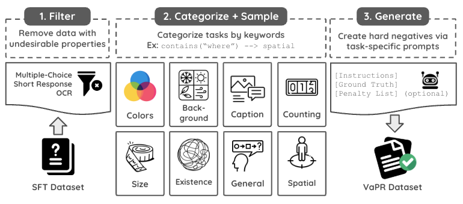
Task distribution of the VaPR dataset
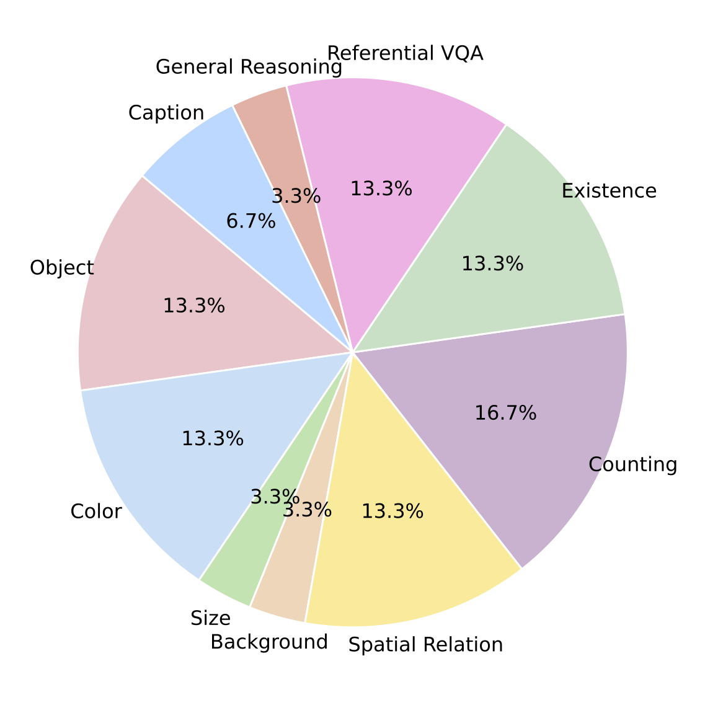
Comparison of VaPR vs. HA-DPO, POVID, RLAIF-V, and CSR on stylistic similarity (measured via linguistic similarity using LD, i.e., Levenshtein distance) and length balance (token-length deltas). We report the % of cases where the chosen response is longer (chosen > rejected) or shorter (rejected > chosen) across all samples, as well as, samples with short (<100 tokens), and long responses. We also report average token length deltas for (chosen > rejected) and (rejected > chosen). Lower Levenshtein distance and smaller token deltas indicate higher stylistic and length similarity, respectively. CSR includes only has long responses.
VaPR has the lowest Levenshtein distance and token length difference,
reinforcing the hard-negative nature of its rejections.
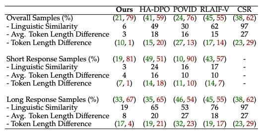
In the illustration below, we show how VaPR-generated hard-negative responses reduce stylistic and length biases compared to biased rejections, giving examples of fine-grained perception and reasoning tasks like counting and spatial reasoning. We also include additional examples covering perturbations in other categories.
Instruction: How many planes are visible in the image?
Chosen Response: There are four planes visible in the image.
VaPR Response: There are six planes visible in the image.
Response with length bias: There are seven planes visible in the sky in the image, each leaving a bright white trail behind.
Response with style bias: Five planes can be seen in the image.
Counting category example. VaPR generates subtle, targeted perturbations (shown in blue), while length-biased rejections add verbose descriptions and style-biased ones alter content structure.
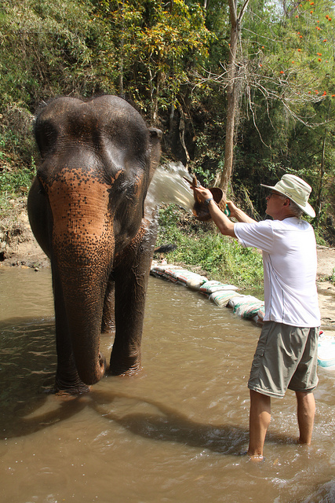
Instruction: Where is the man standing in relation to the baby elephant in the water?
Chosen Response: The man is standing next to the baby elephant in the water.
VaPR Response: The man is standing far away from the baby elephant, near the edge of the water.
Response with length bias: The man is standing far from the baby elephant, attempting to throw water using a bucket while standing at the edge of the water.
Response with style bias: The elephant is standing in the water, away from the man, who is on the shore.
Spatial reasoning category example. VaPR generates subtle, targeted perturbations (shown in blue), while length-biased rejections add verbose descriptions and style-biased ones alter content structure.
Instruction: What type of airplane is displayed in the image?
Chosen Response: The image displays a World War era airplane with a propeller hanging in a museum.
Rejected Response: The image displays a World War era airplane with jet engines hanging in a museum.
Object category example
Instruction: What are the colors of the flowers in the vase?
Chosen Response: The colors of the flowers in the vase are red, green, and purple.
Rejected Response: The colors of the flowers in the vase are yellow, blue, and orange.
Color category example
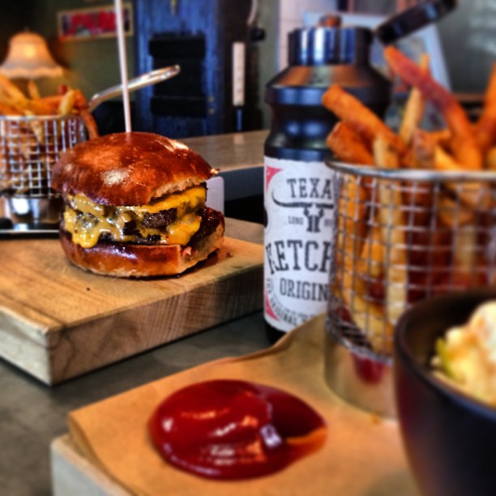
Instruction: What is the size of the dog compared to the child?
Chosen Response: The dog is described as large in comparison to the child. This implies that the dog may be of a larger breed or perhaps a fully-grown adult dog.
Rejected Response: The dog is described as small in comparison to the child. This implies that the dog may be a smaller breed or perhaps still a puppy.
Size category example
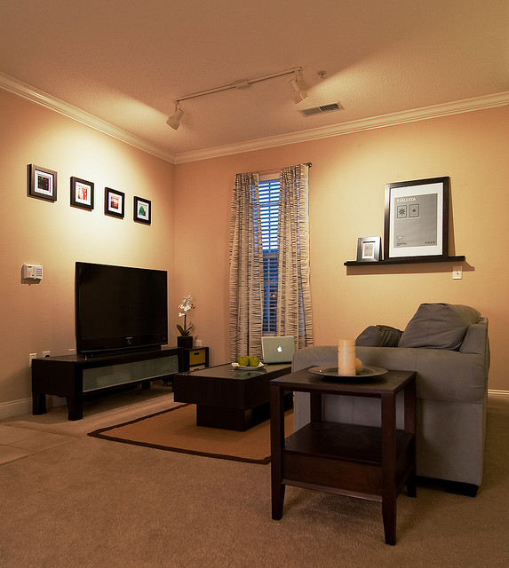
Instruction: What type of lighting is featured in the living room?
Chosen Response: The living room features spot lighting, which provides a focused illumination on specific areas or objects within the room.
Rejected Response: The living room features ambient lighting, which provides a general, diffused illumination throughout the room.
Background category example
Instruction: Does the light say it is ok to walk?
Chosen Response: Yes, the light indicates it's safe to walk.
Rejected Response: No, the light says it's not safe to walk.
Existence category example
Chosen Response: The cheeseburger is described as massive and containing double cheese layers.
Hard-negative Rejected Response: The cheeseburger is described as small and containing a single cheese layer.
Referential VQA category example
Chosen Response: The image features a unique scene of a green jetfighter airplane on display in an open area of the city. The airplane has white and pink accents painted on its design, making it visually striking. It is situated in the middle of the road, with tall buildings surrounding the area.
Hard-negative Rejected Response: The image features a unique scene of a yellow jetfighter airplane on display in an open area of the city. The airplane has purple and orange accents painted on its design, making it visually striking. It is situated on the side of the road, with short buildings surrounding the area.
Image captioning category example
Chosen Response: A possible reason for the man taking a picture of the dirt cake could be that the cake is a unique and creative design, which makes it worth capturing before it is served or shared. The photo with others to highlight the intricate and detailed decorations on the cake.
Hard-negative Rejected Response: A possible reason for the man taking a picture of the dirt cake could be that the cake is a rare and expensive design, which makes it worth capturing before it is served or shared. The photo with others to highlight the intricate and sea-themed aspects of the cake.
General reasoning category example
To understand how different preference datasets affect DPO training, we analyze two key metrics: reference model log-probabilities and reward accuracy during training. The quality and characteristics of preference pairs significantly impact the stability and effectiveness of the optimization process.
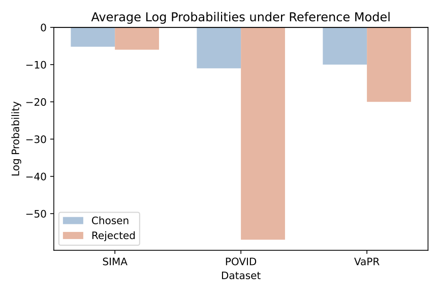
Reference Log-Probabilities
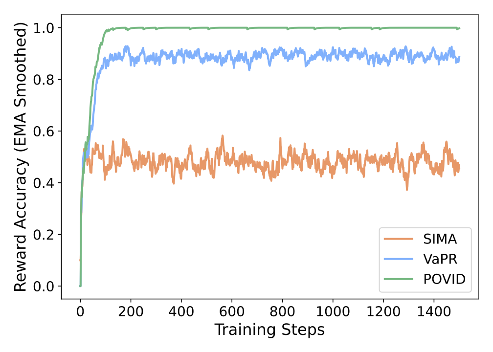
DPO Reward Accuracy
Reference Log-Probabilities Analysis: The corpus-level log p_ref(chosen vs. rejected) reveals distinct patterns across datasets. SIMA shows nearly identical pairs with Δ≈0, indicating minimal difference between chosen and rejected responses. POVID exhibits very large differences (|Δ| large), suggesting overly dissimilar preference pairs. In contrast, VaPR demonstrates moderate separation, which is indicative of well-crafted hard negatives that provide meaningful learning signals without being trivially different.
DPO Reward Accuracy During Training: The training dynamics further validate these observations. Models trained on SIMA achieve only ~50% reward accuracy, indicating DPO collapse where the model cannot distinguish between chosen and rejected responses. POVID leads to ~100% accuracy, suggesting reward hacking where the model exploits superficial differences rather than learning meaningful preferences. VaPR shows gradual improvement to ~90% without saturating, indicating better generalization from exposure to more challenging preference pairs.
Key Insight: Very similar preference pairs lead to DPO collapse, while very dissimilar pairs result in reward hacking. VaPR's hard negatives avoid both failure modes, enabling stable and effective preference optimization.
Performance comparison of LLaVA-v1.5-Instruct, Qwen2VL-Instruct, Qwen2.5VL-Instruct, SFT and DPO models finetuned on VaPR, and other preference datasets across 2B, 3B, 7B, and 13B parameter sizes on ten benchmarks. Higher scores indicate better performance across all benchmarks, with the highest score for each benchmark highlighted in bold. All models are evaluated using publicly available checkpoints, adhering to evaluation parameters prescribed by the benchmarks. † represents results that show statistically significant improvement via bootstrap resampling (95% CI).
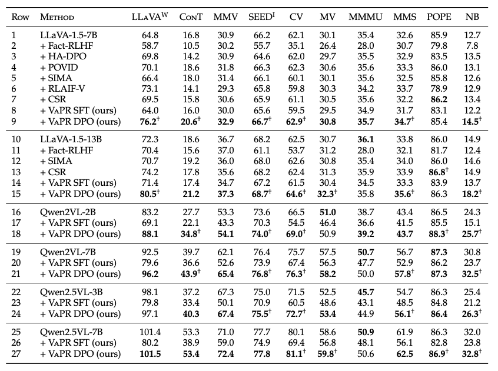
Key Takeaways:
We analyze the effect of dataset size on performance using 3K, 10K, and 30K samples from VaPR. As shown illustrated in the figure below (X-axis spacing between 3K, 10K, and 30K is not uniform), all models improve with more data. LLaVA-VaPR shows large gains even at 3K, but with diminishing returns at higher scales. Qwen2VL and Qwen2.5VL improve less at 3K yet benefit more from larger datasets, reflecting their stronger pretrained priors compared to LLaVA-v1.5.
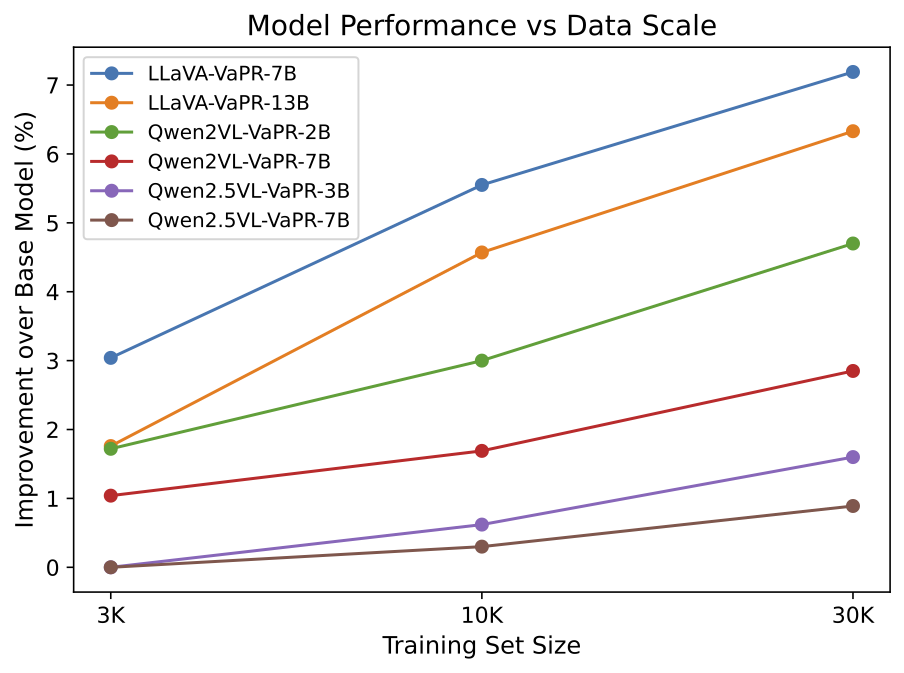
Large vision-language models (LVLMs) tend to favor "Yes" over "No" in binary questions. On NaturalBench, an adversarial benchmark, base SFT models like LLaVA-v1.5 and Qwen variants often answer "Yes" even when the correct answer is "No." VaPR models reduce this bias, with LLaVA-VaPR 13B showing the strongest shift toward accurate "No" responses. This improvement reflects enhanced perception, reasoning, and visio-linguistic compositionality. The following figure captures this phenomenon, where dotted rectangles highlight incorrect "Yes" (red) and "No" (yellow) predictions, illustrating reduced "Yes" bias after preference finetuning.
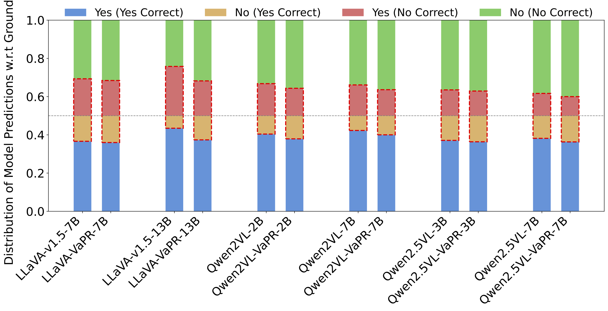
We conduct an ablation with Qwen3-32B as an open-source editor, creating VaPR-OS from the same 10K subset. VaPR-OS shows comparable hard-negative characteristics to VaPR (token length gap 6 vs. 3; Levenshtein distance 10 vs. 6), and models trained on it reach ~99% of the performance of their GPT-4o-based counterparts, while still outperforming base instruct models. These results demonstrate that VaPR generalizes effectively to open-source editors, making it accessible for broader research and applications. The following table summarizes these findings for 3 models LLaVA-v1.5-7B, Qwen2VL-2B, and Qwen2.5VL-3B.
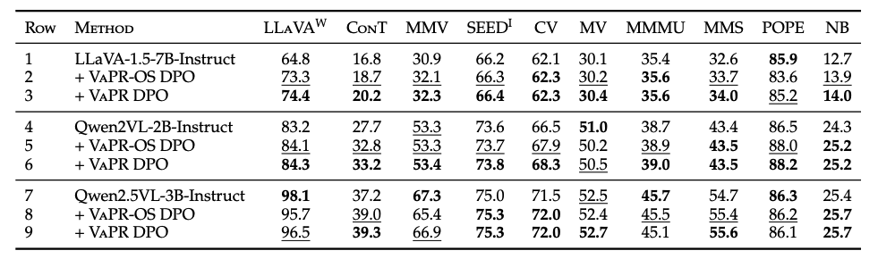
We refer the readers to our paper for more details on experiments, analyses, and ablations.
@inproceedings{
wadhawan2025vapr,
title={Va{PR} - Vision-language Preference alignment for Reasoning},
author={Rohan Wadhawan and Fabrice Y Harel-Canada and Zi-Yi Dou and Suhaila Shakiah and Robinson Piramuthu and Nanyun Peng},
booktitle={Second Conference on Language Modeling},
year={2025},
url={https://openreview.net/forum?id=uBAubFwymy}
}